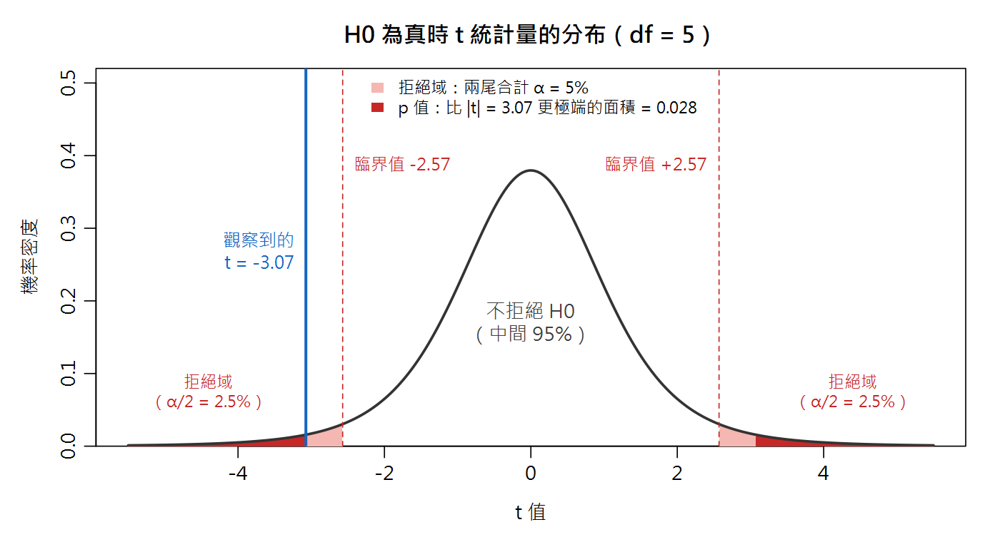
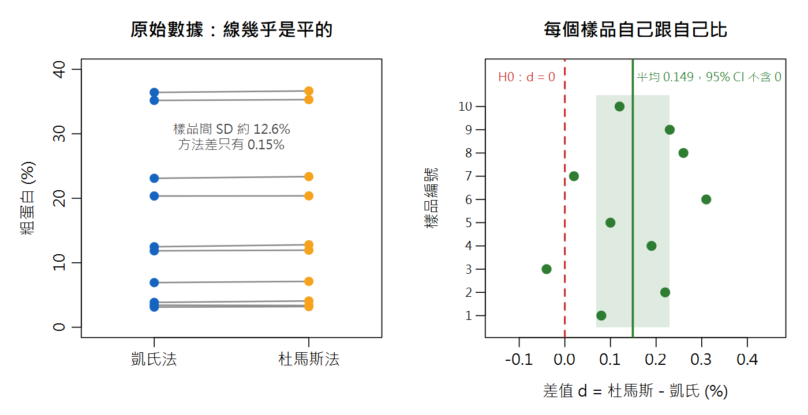
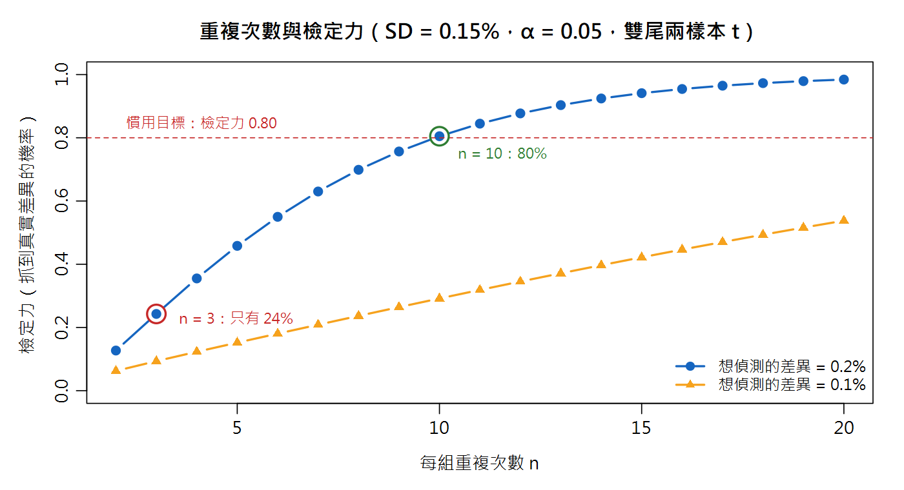

假說檢定與 t／F 檢定 Hypothesis Testing, t-test & F-test
實驗室新買了一台杜馬斯定氮儀，和用了二十年的凱氏法一比，粗蛋白平均高了 0.15%。主管問：「這是真的有差，還是只是隨機誤差？」你總不能回答「感覺有差」。這一章教你用一套全世界實驗室通用的判決程序來回答。
本章新詞先認識：虛無假說 H0＝「沒有差異」的預設立場；p 值＝假設 H0 為真時，出現這麼極端（或更極端）數據的機率；顯著水準 α＝事先講好的判決門檻（通常 0.05）；檢定力＝真的有差時抓得到的機率。
名詞卡住了？回 Ch0 名詞圖鑑 查白話解釋與比喻；信賴區間忘了就回 Ch2。
- 用自己的話說出 H0／H1、α、p 值、型一／型二錯誤的意義，並正確解讀 p 值
- 知道「95% CI 不含假設值」和「雙尾 p < 0.05」是同一件事
- 依實驗設計選對檢定：one-sample t（對 CRM）、paired t（同樣品兩方法）、Welch t（兩組獨立）、F 檢定（比精密度）
- 用
power.t.test估計需要的重複次數，理解「不顯著 ≠ 相等」 - 分辨「統計顯著」與「實務重要」，並知道三組以上為什麼要改用 ANOVA（Ch16）
15.1 假說檢定的邏輯：法庭上的無罪推定
法庭的規則是無罪推定：先假設被告無罪，除非證據強到「如果他真的無罪，幾乎不可能出現這些證據」，才判有罪。 假說檢定一模一樣，只是把「無罪」換成「沒有差異」：
| 法庭 | 假說檢定 | 杜馬斯 vs 凱氏的例子 |
|---|---|---|
| 預設：被告無罪 | 虛無假說 H0：沒有差異 | H0：兩方法的平均差 = 0 |
| 檢察官的主張：有罪 | 對立假說 H1：有差異 | H1：平均差 ≠ 0 |
| 把證據整理成「有多不利」 | 檢定統計量（t、F、Q、G…） | t = 差異 ÷ 差異的標準誤（訊號 ÷ 雜訊） |
| 定罪門檻：排除合理懷疑 | 顯著水準 α（做實驗之前就訂好） | α = 0.05 |
| 如果他無罪，出現這種證據的機率 | p 值 | p < α → 拒絕 H0；p ≥ α → 不拒絕 H0 |
| 「無罪釋放」不等於「證明清白」 | 「不拒絕 H0」不等於「證明沒有差異」 | 可能只是重複次數太少、證據不足（見 15.9） |
判決會錯兩種：型一錯誤與型二錯誤
以「這批奶粉的蛋白質是否符合標示」為例，H0：這批合格。
| 真相：這批其實合格（H0 為真） | 真相：這批其實不合格（H0 為假） | |
|---|---|---|
| 檢定結論：不合格（拒絕 H0） | 型一錯誤 α 把合格批誤判成不合格 → 好貨被退、重工、報廢（冤枉好人） | ✅ 正確（機率 = 檢定力 1 − β） |
| 檢定結論：沒有證據說不合格（不拒絕 H0） | ✅ 正確（機率 = 1 − α） | 型二錯誤 β 放行了不合格批 → 流到市面、被稽查或客訴（放走壞人） |
α 是你自己訂的（通常 0.05）；β 則取決於差異有多大、數據有多吵（SD）、重複幾次（n）。 α 訂得越嚴（例如 0.01），越不會冤枉好人，但在同樣的 n 之下就越容易放走壞人——兩種錯誤是蹺蹺板，唯一能同時壓低兩者的方法是增加 n 或降低 SD。
15.2 one-sample t：用 CRM 檢查方法有沒有偏倚
Ch6 談過真度（trueness）：方法的平均值離「真值」多遠。實務上的「真值」就是認證參考物質（CRM）的認證值。 情境：奶粉 CRM 的粗蛋白認證值為 35.10 g/100 g，你用凱氏法獨立重複 6 次，平均 34.95。低了 0.15——方法有偏倚（bias）嗎？
# ---------- 1. one-sample t：用 CRM 檢查方法有沒有偏倚 (ch15_ex1) ---------- # 步驟一：建立資料。奶粉 CRM 粗蛋白認證值 35.10 g/100 g，凱氏法重複 6 次 crm <- c(34.92, 35.12, 34.85, 35.04, 34.81, 34.98) cert <- 35.10 # 步驟二：計算。t = (平均 - 認證值) / (SD/sqrt(n)) n <- length(crm) bias <- mean(crm) - cert se <- sd(crm) / sqrt(n) t0 <- bias / se round(c(mean = mean(crm), SD = sd(crm), bias = bias, SE = se, t = t0), 4) 2 * pt(-abs(t0), df = n - 1) # 雙尾 p 值：兩邊尾巴的面積 qt(0.975, df = n - 1) # 臨界值 t(0.975, 5) # 步驟三：一行指令做完，並解讀 t.test(crm, mu = cert) round(mean(crm) / cert * 100, 2) # 回收率 %（Ch06 的真度）
mean SD bias SE t 34.9533 0.1169 -0.1467 0.0477 -3.0731 [1] 0.02768619 [1] 2.570582 One Sample t-test data: crm t = -3.0731, df = 5, p-value = 0.02769 alternative hypothesis: true mean is not equal to 35.1 95 percent confidence interval: 34.83065 35.07602 sample estimates: mean of x 34.95333 [1] 99.58
三步驟解讀 t.test 輸出：
t = -3.0731：平均值比認證值低了 3.07 個標準誤。|t| = 3.07 > 臨界值 2.571（df = 5）→ 落在拒絕域。p-value = 0.02769：如果方法真的沒有偏倚，抽到「偏離這麼多或更多」的機率只有 2.8% < 5% → 拒絕 H0，方法有顯著的負偏倚。95 percent confidence interval: 34.83 ~ 35.08：方法真正平均值的可能範圍，不包含 35.10（下一節會用到）。

15.3 信賴區間與 p 值：同一枚硬幣的兩面
Ch2 學的 95% 信賴區間用的是同一個 t 分布、同一個標準誤，所以兩者的結論永遠一致：
用同一組 CRM 數據驗證：把假設值分別放在區間的邊界上、裡面、外面，看 p 值怎麼變。
# ---------- 2. 95% CI 與雙尾 p 值是同一件事 (ch15_ex2) ---------- ci <- t.test(crm, mu = cert)$conf.int round(as.numeric(ci), 4) # 35.10 不在區間內 <=> p < 0.05 t.test(crm, mu = ci[2])$p.value # 把假設值放在 CI 邊界 -> p 剛好 0.05 t.test(crm, mu = 35.00)$p.value # 假設值在 CI 裡面 -> p > 0.05 t.test(crm, mu = 35.20)$p.value # 假設值在 CI 外面 -> p < 0.05
[1] 34.8306 35.0760 [1] 0.05 [1] 0.3730787 [1] 0.003559686
假設值剛好放在 CI 上限 35.076 時，p 恰好等於 0.05；放在區間裡（35.00）p = 0.37；放在區間外（35.20）p = 0.0036。 所以 95% CI 可以這樣讀：「所有不會被這組數據在 α = 0.05 下拒絕的假設值」的集合。 報告時 CI 比 p 值更有用——p 值只回答「有沒有差」，CI 還告訴你「差多少、估得多準」。
15.4 雙尾還是單尾？實驗之前就要決定
雙尾（H1：μ ≠ μ0）問的是「有沒有不一樣」，偏高偏低都算——方法比較、偏倚檢查幾乎都用雙尾，也是 t.test 的預設。
單尾（H1：μ > μ0 或 μ < μ0）只在「另一個方向就算發生也不會改變決策」時才合理。例如奶粉水分規格上限 4.00%，品管只在乎「有沒有超過」：
# ---------- 3. 單尾檢定：事前就決定方向 (ch15_ex3) ---------- # 奶粉水分規格上限 4.00%。品管只關心「有沒有超過」-> 抽樣前就決定用單尾 moist <- c(4.12, 3.98, 4.21, 4.05, 4.16) t.test(moist, mu = 4.00, alternative = "greater")$p.value # 單尾 t.test(moist, mu = 4.00)$p.value # 雙尾 = 單尾的 2 倍
[1] 0.03120611 [1] 0.06241222
同一組數據，單尾 p = 0.031（顯著）、雙尾 p = 0.062（不顯著）——方向猜對時，單尾 p 剛好是雙尾的一半。
15.5 回頭看 Ch5：Q 檢定和 Grubbs 本來就是假說檢定
你在 Ch5 已經照著「算統計量 → 比臨界值」做過了，現在可以把它放回完整的框架：
| 檢定 | H0 | 檢定統計量 | 判定 |
|---|---|---|---|
| Dixon Q | 可疑值和其他值來自同一個（常態）母體 | Q = gap / 全距 | Q > Qcrit → 拒絕 H0（Ch5 用 90% 信賴，即 α = 0.10） |
| Grubbs | 同上 | G = max|xi − x̄| / SD | G > Gcrit → 拒絕 H0（α = 0.05） |
| one-sample t | μ = μ0 | t = (x̄ − μ0) / (SD/\(\sqrt{n}\)) | |t| > tcrit，即 p < α |
# ---------- 4. 回扣 Ch05：Grubbs 檢定也是假說檢定 (ch15_ex4) ---------- # H0：82.20 與其他值來自同一個母體；檢定統計量 G；臨界值 G_crit dry <- c(88.62, 88.74, 89.20, 82.20) G <- max(abs(dry - mean(dry))) / sd(dry) nn <- length(dry) t2 <- qt(0.05 / (2 * nn), df = nn - 2)^2 Gcrit <- ((nn - 1) / sqrt(nn)) * sqrt(t2 / (nn - 2 + t2)) round(c(G = G, Gcrit = Gcrit), 3) G > Gcrit # TRUE -> 拒絕 H0（α = 0.05）
G Gcrit 1.496 1.481 [1] TRUE
Ch5 的乾物質數據：G = 1.496 > Gcrit = 1.481 → 在 α = 0.05 下拒絕 H0，82.20 被判為異常值（只是險勝）。 「查臨界值表」和「看 p 值」是同一件事的兩種寫法：統計量超過 α 對應的臨界值 ⇔ p < α。 也因此 Ch5 的倫理底線在這裡同樣成立——「拒絕 H0」只代表這個值在統計上不合群，不代表你可以不交代原因就刪掉它；而且 n = 4 時檢定力很低，「沒被判為異常值」也不代表它一定正常。
15.6 paired t：同一批樣品、兩種方法
回到開場的問題。你拿了 10 種食品，每一種都用凱氏法和杜馬斯法各測一次。這叫成對設計（paired design）：兩欄數據是一對一綁在一起的。
成對 t 檢定的做法簡單到不可思議：先算每個樣品的差值 d，再對 d 做 one-sample t（H0：平均差 = 0）。
# ---------- 5. paired t：凱氏法 vs 杜馬斯法，同 10 個樣品 (ch15_ex5) ----------
# 步驟一：建立資料（粗蛋白 %，每個樣品兩種方法各測一次）
food <- c("鮮乳", "優格", "豆漿", "白米", "麵粉",
"雞蛋", "豬里肌", "雞胸肉", "黃豆粉", "脫脂奶粉")
kjeldahl <- c(3.12, 3.85, 3.41, 6.92, 11.85, 12.48, 20.35, 23.10, 36.42, 35.18)
dumas <- c(3.20, 4.07, 3.37, 7.11, 11.95, 12.79, 20.37, 23.36, 36.65, 35.30)
# 步驟二：計算。成對 t 其實就是「對差值做 one-sample t（mu = 0）」
d <- dumas - kjeldahl
d
round(c(mean_d = mean(d), SD_d = sd(d)), 4)
round(c(SD_kjeldahl = sd(kjeldahl), SD_dumas = sd(dumas)), 2) # 樣品間差異
# 步驟三：正確做法 vs 錯誤做法
t.test(dumas, kjeldahl, paired = TRUE) # 正確：成對
t.test(dumas, kjeldahl)$p.value # 錯用：當成兩組獨立樣本
[1] 0.08 0.22 -0.04 0.19 0.10 0.31 0.02 0.26 0.23 0.12
mean_d SD_d
0.1490 0.1115
SD_kjeldahl SD_dumas
12.64 12.66
Paired t-test
data: dumas and kjeldahl
t = 4.2258, df = 9, p-value = 0.00222
alternative hypothesis: true mean difference is not equal to 0
95 percent confidence interval:
0.06923779 0.22876221
sample estimates:
mean difference
0.149
[1] 0.9792777解讀：杜馬斯法平均高 0.149%，95% CI 為 0.069 ~ 0.229%（不含 0），t = 4.23、p = 0.0022 → 兩方法有顯著的系統差。 （杜馬斯法測的是總氮，連硝酸鹽等凱氏法抓不完全的氮也算進去，略高是文獻上常見的現象。）
錯用獨立樣本 t 會怎樣？同樣的數據，p 值從 0.0022 變成 0.98——結論完全相反。原因看圖就懂：

進階：成對 t 假設差值大致固定。若差值會隨濃度變大（高蛋白樣品差更多），應改看相對差或用 Ch4 的迴歸比較兩方法。
15.7 兩組獨立樣本：Welch t 當預設
如果兩組數據沒有配對關係（兩條產線各自的批次、兩家供應商的貨），就用兩獨立樣本 t 檢定。它有兩個版本：
| 版本 | R 寫法 | 假設 | 建議 |
|---|---|---|---|
| Welch t | t.test(x, y)（預設） | 兩組變異數可以不同；df 用 Welch–Satterthwaite 公式估計，通常不是整數 | ✅ 一律當預設 |
| Student t（合併變異數） | t.test(x, y, var.equal = TRUE) | 兩組變異數相等；df = n1 + n2 − 2 | 只有在事前就有充分理由相信變異數相等時（同方法、同儀器、同基質，且兩組 n 相近） |
情境：兩條產線醬油的總氮（g/100 mL）。A 線是老設備，只抽了 4 批而且很不穩；B 線抽了 10 批、很穩。
# ---------- 6. 兩獨立樣本：Welch t 當預設 (ch15_ex6) ----------
# 兩條產線醬油的總氮 (g/100 mL)。A 線 4 批、B 線 10 批，批次彼此獨立
lineA <- c(1.52, 1.38, 1.61, 1.45)
lineB <- c(1.41, 1.38, 1.43, 1.39, 1.42, 1.37, 1.40, 1.44, 1.38, 1.41)
round(c(mean_A = mean(lineA), SD_A = sd(lineA),
mean_B = mean(lineB), SD_B = sd(lineB)), 4)
t.test(lineA, lineB) # 預設就是 Welch（不假設變異數相等）
t.test(lineA, lineB, var.equal = TRUE)$p.value # 硬假設等變異 -> 結論翻盤
mean_A SD_A mean_B SD_B
1.4900 0.0983 1.4030 0.0231
Welch Two Sample t-test
data: lineA and lineB
t = 1.7505, df = 3.1336, p-value = 0.1744
alternative hypothesis: true difference in means is not equal to 0
95 percent confidence interval:
-0.06741973 0.24141973
sample estimates:
mean of x mean of y
1.490 1.403
[1] 0.01694717解讀：A 線的 SD（0.098）是 B 線（0.023）的 4 倍多。Welch 老實地反映「A 線只有 4 批、又很吵」：df 只剩 3.13，p = 0.17，不顯著。 硬假設等變異時，B 線那 10 筆很穩的數據把合併 SD 拉低，p 變成 0.017「顯著」——這是假警報。 當「樣本少的那組變異反而大」時，Student t 的型一錯誤率會遠高於 5%；反過來則會太保守。Welch 在變異數真的相等時幾乎沒有損失，所以當預設最安全。
15.8 F 檢定：比較兩組的精密度
t 檢定比的是平均值（準不準）；想比精密度（穩不穩），要比的是變異數，用 F 檢定：
情境：同一罐均質火腿樣品，資深與新進分析員各自獨立稱樣、萃取 8 次測粗脂肪，想知道新人的精密度是否明顯較差。
# ---------- 7. F 檢定：兩位分析員的精密度 (ch15_ex7) ----------
# 同一罐均質火腿樣品，兩人各獨立稱樣、萃取 8 次，測粗脂肪 (%)
senior <- c(14.52, 14.61, 14.48, 14.57, 14.66, 14.50, 14.59, 14.55)
junior <- c(14.31, 14.82, 14.47, 14.95, 14.20, 14.68, 14.39, 14.77)
round(c(SD_senior = sd(senior), SD_junior = sd(junior),
F = var(junior) / var(senior)), 4)
var.test(junior, senior) # F = 變異數比（不是 SD 比）
# F 檢定很怕非常態：兩組其實來自「同一個」右偏母體（對數常態），
# 理論上只該有 5% 誤判，實際上呢？
set.seed(1505)
p_norm <- replicate(5000, var.test(rnorm(10), rnorm(10))$p.value)
p_skew <- replicate(5000, var.test(rlnorm(10), rlnorm(10))$p.value)
c(normal = mean(p_norm < 0.05), lognormal = mean(p_skew < 0.05))
SD_senior SD_junior F
0.0600 0.2688 20.0709
F test to compare two variances
data: junior and senior
F = 20.071, num df = 7, denom df = 7, p-value = 0.0007897
alternative hypothesis: true ratio of variances is not equal to 1
95 percent confidence interval:
4.018278 100.252486
sample estimates:
ratio of variances
20.07093
normal lognormal
0.0470 0.3982 解讀：新人 SD = 0.269%、資深 SD = 0.060%，SD 差 4.5 倍，變異數比 F = 20.07（df = 7, 7），p = 0.0008 → 兩人精密度有顯著差異，新人需要再訓練。 但看一下變異數比的 95% CI：4.0 ~ 100，寬得驚人——n = 8 時對「變異數」的估計非常粗糙，這也是 F 檢定在小樣本時檢定力低的原因。
15.9 檢定力與樣本數：要重複幾次才夠？
檢定力（power）= 1 − β：如果差異真的存在，你的實驗抓得到它的機率。它由四件事決定，知道其中三個就能算第四個： 想偵測的差異 δ、數據的 SD、每組重複次數 n、顯著水準 α。
問題：兩方法的重複性 SD 約 0.15%，若真實差異達 0.2% 你希望有 80% 的機率抓到，每組要重複幾次？
# ---------- 8. 檢定力與樣本數 (ch15_ex8) ----------
# 問題：兩方法重複性 SD 約 0.15%，想偵測 0.2% 的差異，每組要重複幾次？
power.t.test(delta = 0.2, sd = 0.15, sig.level = 0.05, power = 0.80)
# 反過來：如果每組只做 n 次，抓得到 0.2% 差異的機率（檢定力）是多少？
ns <- c(3, 5, 8, 10, 15)
pow <- sapply(ns, function(k)
power.t.test(n = k, delta = 0.2, sd = 0.15)$power)
round(setNames(pow, paste0("n=", ns)), 3)
# 「不顯著 ≠ 相等」：每組只做 3 次的例子
k3 <- c(12.31, 12.52, 12.40) # 凱氏法
d3 <- c(12.55, 12.71, 12.49) # 杜馬斯法
r3 <- t.test(d3, k3)
round(c(diff = mean(d3) - mean(k3), p = r3$p.value), 4)
round(as.numeric(r3$conf.int), 3) # CI 同時包含 0 和 0.2 以上 -> 無法下結論
Two-sample t test power calculation
n = 9.889068
delta = 0.2
sd = 0.15
sig.level = 0.05
power = 0.8
alternative = two.sided
NOTE: n is number in *each* group
n=3 n=5 n=8 n=10 n=15
0.243 0.458 0.699 0.805 0.941
diff p
0.1733 0.1253
[1] -0.076 0.422解讀：n = 9.89，無條件進位 → 每組 10 次。反過來看，食品分析慣用的「三重複」檢定力只有 24%—— 就算兩方法真的差 0.2%，你有四分之三的機率得到「不顯著」。

15.10 統計顯著 vs 實務重要
反過來的陷阱：n 夠大時，再小的差異都會「顯著」。情境：兩台線上近紅外水分儀各測 40 包同批奶粉，廠內規定兩台儀器的差異在 ±0.20% 以內即視為一致。
# ---------- 9. 統計顯著 vs 實務重要 (ch15_ex9) ---------- # 兩台線上水分儀各測 40 包同批奶粉；廠內容許兩台儀器差 ±0.20% set.seed(1509) nirA <- round(rnorm(40, mean = 3.52, sd = 0.06), 2) nirB <- round(rnorm(40, mean = 3.56, sd = 0.06), 2) r9 <- t.test(nirB, nirA) round(c(diff = mean(nirB) - mean(nirA), p = r9$p.value), 4) round(as.numeric(r9$conf.int), 3) # 整個 CI 都遠小於 0.20 -> 實務上可忽略
diff p 0.0423 0.0021 [1] 0.016 0.069
解讀：p = 0.0021，「非常顯著」；但差異只有 0.042%，95% CI 為 0.016 ~ 0.069%，整個區間都遠小於容許差 0.20%。 結論應該是：「兩台儀器有統計上可偵測的微小系統差，但遠小於容許差，實務上可視為一致，不需停線校正。」
| p 值 | 差異（與 CI）相對於容許差／方法不確定度 | 怎麼判讀 |
|---|---|---|
| 顯著 | 整個 CI 都在容許差之外或相當大 | 真的有差，而且重要 → 要處理 |
| 顯著 | 整個 CI 都遠小於容許差 | 有差但不重要（本節的例子）→ 記錄即可 |
| 不顯著 | CI 很窄、整個落在容許差之內 | 可以說「實務上相當」 |
| 不顯著 | CI 很寬、跨過容許差 | 證據不足（15.9 的例子）→ 增加 n 再說 |
p 值回答「有沒有」，CI 和效果大小回答「有多少」，法規容許差或擴展不確定度 U（Ch8）回答「要不要緊」。三個都要看。
15.11 預告：三組以上，為什麼不能兩兩 t 檢定？
要比較 5 位分析員，直覺是兩兩做 t 檢定，共 10 次。問題是：每做一次檢定就有 5% 的機會假警報，做越多次，至少中一次的機率越高。 若各次檢定彼此獨立，k 次檢定「至少一次型一錯誤」的機率（整體 α）是：
# ---------- 10. 多重比較：為什麼三組以上不能兩兩 t 檢定 (ch15_ex10) ----------
groups <- 2:6
pairs <- choose(groups, 2) # k 組共有幾對
data.frame(groups = groups, pairs = pairs,
alpha_family = round(1 - 0.95^pairs, 3))
# 模擬驗證：5 位分析員其實「完全沒差」，兩兩 t 檢定 10 次，
# 至少出現一次 p < 0.05（誤判有人不一樣）的比例？
set.seed(1510)
cmb <- combn(5, 2)
any_sig <- replicate(2000, {
x <- matrix(rnorm(5 * 4, mean = 12.5, sd = 0.15), nrow = 4) # 5 人各 4 重複
p <- apply(cmb, 2, function(j) t.test(x[, j[1]], x[, j[2]])$p.value)
any(p < 0.05)
})
mean(any_sig)
groups pairs alpha_family 1 2 1 0.050 2 3 3 0.143 3 4 6 0.265 4 5 10 0.401 5 6 15 0.537 [1] 0.266
解讀：3 組（3 對）整體 α 就變 14%，5 組（10 對）依公式高達 40%。 模擬也證實：5 位分析員其實完全沒差，兩兩 t 檢定卻有 26.6% 的機率「發現」至少一對有顯著差異。 （模擬值比公式的 40% 低，是因為這 10 次比較共用同一批數據、彼此並不獨立；公式是獨立假設下的近似。但不論 27% 或 40%，都遠遠超過你以為的 5%。）
🧭 一張表選對檢定
| 你想問的問題 | 數據長相 | 檢定 | R |
|---|---|---|---|
| 方法有沒有偏倚？ | 一組重複 vs 一個已知值（CRM、標示值、規格） | one-sample t | t.test(x, mu = 35.10) |
| 兩方法／前後測有沒有差？ | 同一批樣品各測兩次，一對一配對 | paired t | t.test(x, y, paired = TRUE) |
| 兩組平均有沒有差？ | 兩組互相獨立、無配對 | Welch t | t.test(x, y) |
| 兩組精密度有沒有差？ | 兩組獨立重複（近似常態） | F 檢定 | var.test(x, y) |
| 要重複幾次？ | —（實驗前規劃） | 檢定力分析 | power.t.test(delta=, sd=, power=) |
| 三組以上平均有沒有差？ | 三組以上獨立樣本 | one-way ANOVA | Ch16 |
📊 Excel 也會算：t 檢定與 F 檢定
⬇ 下載本章 Excel 活頁簿 數據、公式、白話說明都排好了，打開就能算；改黃色儲存格試試看，最後一張工作表會幫你和 R 的答案對照。
成對例：凱氏法放A2:A11、杜馬斯法放 B2:B11。T.TEST 的第 3 個引數是尾數（1 單尾、2 雙尾），第 4 個是類型（1 成對、2 等變異、3 不等變異 Welch）。| 任務 | Excel 公式 | 說明（對照 R 的結果） |
|---|---|---|
| paired t 的 p 值 | =T.TEST(A2:A11, B2:B11, 2, 1) | → 0.0022 |
| 錯用獨立樣本（Welch）的 p 值 | =T.TEST(A2:A11, B2:B11, 2, 3) | → 0.98 |
| Welch t 的 p 值（醬油兩產線） | =T.TEST(A線範圍, B線範圍, 2, 3) | → 約 0.17；類型改 2（等變異）→ 0.017 |
one-sample t 的 t 值（CRM 放 D2:D7） | =(AVERAGE(D2:D7)-35.10)/(STDEV.S(D2:D7)/SQRT(COUNT(D2:D7))) | → −3.073（Excel 沒有單樣本 t 的現成函數，要自己算） |
| 由 t 值求雙尾 p 值 | =T.DIST.2T(ABS(-3.073), 5) | → 0.0277（t 要取絕對值） |
| 雙尾臨界值 tcrit | =T.INV.2T(0.05, 5) | → 2.571 |
| F 檢定的雙尾 p 值 | =F.TEST(新人範圍, 資深範圍) | → 0.00079 |
| F 值本身 | =VAR.S(新人範圍)/VAR.S(資深範圍) | → 20.07 |
T.TEST 和 F.TEST 只回傳 p 值，不給 t／F、df 與信賴區間；檢定力分析 Excel 沒有內建函數。要完整報告還是 R 方便。②「不顯著就是相等」——錯。可能只是 n 太小、檢定力不足。看 CI 有多寬（15.9）。
③「p 越小，差異越大、越重要」——錯。p 同時受差異大小、SD 和 n 影響；n 夠大時 0.04% 的差也能 p = 0.002（15.10）。差異多大要看估計值和 CI。
④「先看數據再決定用單尾」——錯。這等於把 α 偷偷放大一倍（15.4）。
⑤「重複注射 6 針就是 n = 6」——錯。那是偽重複，獨立重複要從稱樣開始（15.7）。